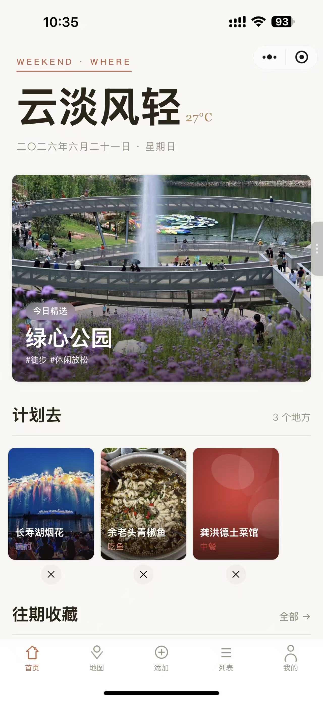
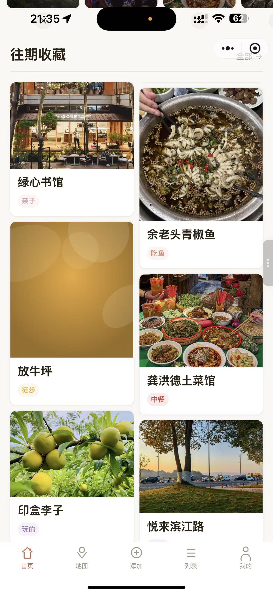

WEEKEND · WHERE
周末去哪儿
像翻一本私人的旅行美食杂志
收录你想去的每一个地方
打标签 · 做计划 · 按图索骥
每天打开
七日刊杂志封面
一周七天，每天不同的风格。打开小程序就像翻开一本新杂志。
首页
今日精选 + 藏本
诗意问候语随天气变化，每日随机推荐一条收藏。往期收藏双列错落排布，像杂志内页。

每日精选

藏本 + 计划去
添加
快速记录，随手收藏
拍张封面、选分类、打标签、标注位置。常用标签一键点击添加，不用重复输入。
封面自动生成
没拍照也没关系，每种分类都有独一无二的光斑渐变色封面。
藏本
左右滑动切换分类
按分类滑动浏览，支持搜索名称、标签、备注。长按快速操作：加入计划去、标记去过、删除。
长按操作
不用进详情页，长按卡片就能标记状态、加入计划清单。
浏览 & 管理
地图找店 · 我的管理
在地图上查看所有收藏位置，按分类标签筛选。我的页管理标签和分类。
地图浏览
标签统计 & 管理
亮点功能
不止于收藏
天气感知问候语
七日刊启动页
分类滑动切换
标签模糊搜索
计划去清单
一键导航
标签管理
封面自动生成
地图标记
编辑室设计
去过/想去
评分备注